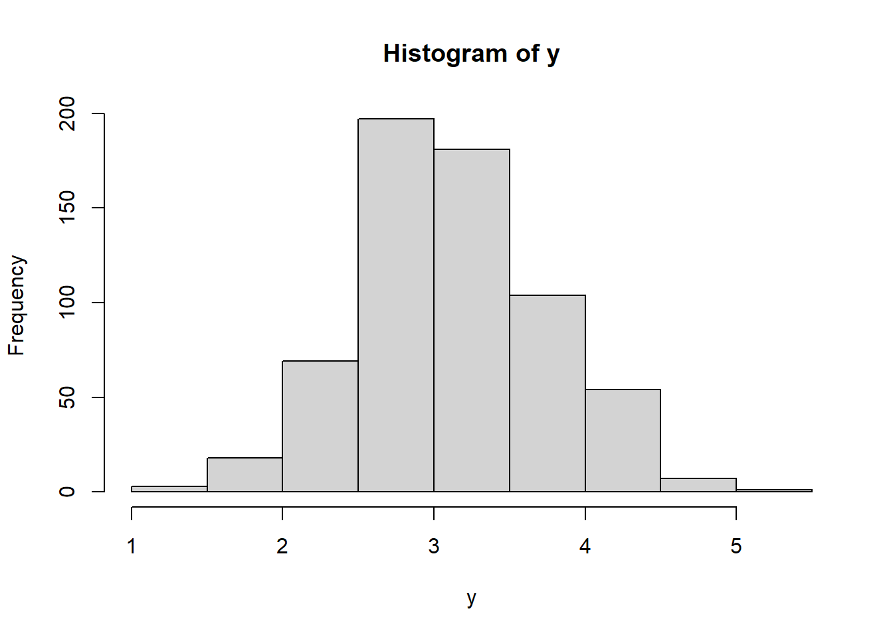
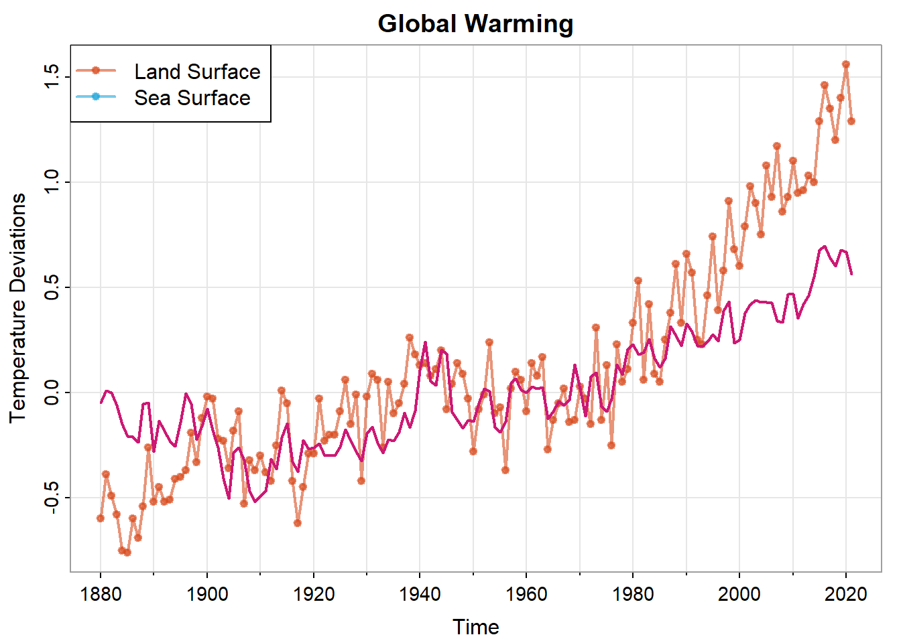
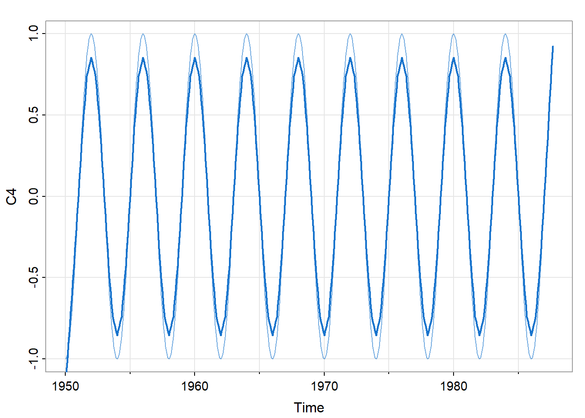

Chapter 3 第三章作业
3.1 3.1 结构回归模型
3.1.1 3.1 (a)
拟合回归模型：
trend = time(jj) - 1970
Q = factor(cycle(jj))
reg = lm(log(jj)~0+trend+Q,na.action = NULL)
head(model.matrix(reg))## trend Q1 Q2 Q3 Q4
## 1 -10.00 1 0 0 0
## 2 -9.75 0 1 0 0
## 3 -9.50 0 0 1 0
## 4 -9.25 0 0 0 1
## 5 -9.00 1 0 0 0
## 6 -8.75 0 1 0 0##
## Call:
## lm(formula = log(jj) ~ 0 + trend + Q, na.action = NULL)
##
## Residuals:
## Min 1Q Median 3Q Max
## -0.29318 -0.09062 -0.01180 0.08460 0.27644
##
## Coefficients:
## Estimate Std. Error t value Pr(>|t|)
## trend 0.167172 0.002259 74.00 <2e-16 ***
## Q1 1.052793 0.027359 38.48 <2e-16 ***
## Q2 1.080916 0.027365 39.50 <2e-16 ***
## Q3 1.151024 0.027383 42.03 <2e-16 ***
## Q4 0.882266 0.027412 32.19 <2e-16 ***
## ---
## Signif. codes: 0 '***' 0.001 '**' 0.01 '*' 0.05 '.' 0.1 ' ' 1
##
## Residual standard error: 0.1254 on 79 degrees of freedom
## Multiple R-squared: 0.9935, Adjusted R-squared: 0.9931
## F-statistic: 2407 on 5 and 79 DF, p-value: < 2.2e-163.1.4 3.1 (d)
如果在(a)中的模型中包含截距项，第四季度分量将变成负的。
## (Intercept) trend Q2 Q3 Q4
## 1 1 -10.00 0 0 0
## 2 1 -9.75 1 0 0
## 3 1 -9.50 0 1 0
## 4 1 -9.25 0 0 1
## 5 1 -9.00 0 0 0
## 6 1 -8.75 1 0 0##
## Call:
## lm(formula = log(jj) ~ 0 + trend + Q + 1, na.action = NULL)
##
## Residuals:
## Min 1Q Median 3Q Max
## -0.29318 -0.09062 -0.01180 0.08460 0.27644
##
## Coefficients:
## Estimate Std. Error t value Pr(>|t|)
## (Intercept) 1.052793 0.027359 38.480 < 2e-16 ***
## trend 0.167172 0.002259 73.999 < 2e-16 ***
## Q2 0.028123 0.038696 0.727 0.4695
## Q3 0.098231 0.038708 2.538 0.0131 *
## Q4 -0.170527 0.038729 -4.403 3.31e-05 ***
## ---
## Signif. codes: 0 '***' 0.001 '**' 0.01 '*' 0.05 '.' 0.1 ' ' 1
##
## Residual standard error: 0.1254 on 79 degrees of freedom
## Multiple R-squared: 0.9859, Adjusted R-squared: 0.9852
## F-statistic: 1379 on 4 and 79 DF, p-value: < 2.2e-163.1.5 3.1 (e)
绘制数据\(x_t\)并在图表上叠加拟合值
a <- data.frame(Time=c(time(log(jj))),logjj=c(log(jj)),fit=reg$fitted.values)
a <- melt(a,id="Time")## Warning: attributes are not identical across measure variables; they will be
## droppedp_line=ggplot(group_by(a),aes(x=Time,y=value,group=variable,col=variable))+
geom_line()+
xlab("Time")+
ylab("log(QEPS)")
p_line检查残差，首先观察Q-Q图
## Don't know how to automatically pick scale for object of type <ts>. Defaulting to
## continuous.
## Don't know how to automatically pick scale for object of type <ts>. Defaulting to
## continuous.使用Box-Ljung 检验来检测残差是否是白噪声
##
## Box-Ljung test
##
## data: reg$residuals
## X-squared = 54.362, df = 4.4308, p-value = 8.166e-11由于pvalue小于0.5，因此残差不是白噪声。
3.2 3.2 检验的死亡率数据
3.2.1 3.2 (a)
在式 (3.17) 中为回归添加另一个分量，该分量考虑了四周前的颗粒物数量。将\(P_{t-4}\) 添加到式 (3.17) 的回归中
temp = tempr-mean(tempr)
ded = ts.intersect(cmort,trend=time(cmort),temp,temp2=temp^2,
part,partL4=stats::lag(part,-4))
n<-length(ded)/6
fit = lm(ded[1:n,1]~ ded[1:n,2] + ded[1:n,3] + ded[1:n,4] + ded[1:n,5]
+ ded[1:n,6], na.action=NULL)
summary(fit)##
## Call:
## lm(formula = ded[1:n, 1] ~ ded[1:n, 2] + ded[1:n, 3] + ded[1:n,
## 4] + ded[1:n, 5] + ded[1:n, 6], na.action = NULL)
##
## Residuals:
## Min 1Q Median 3Q Max
## -18.228 -4.314 -0.614 3.713 27.800
##
## Coefficients:
## Estimate Std. Error t value Pr(>|t|)
## (Intercept) 2.808e+03 1.989e+02 14.123 < 2e-16 ***
## ded[1:n, 2] -1.385e+00 1.006e-01 -13.765 < 2e-16 ***
## ded[1:n, 3] -4.058e-01 3.528e-02 -11.503 < 2e-16 ***
## ded[1:n, 4] 2.155e-02 2.803e-03 7.688 8.02e-14 ***
## ded[1:n, 5] 2.029e-01 2.266e-02 8.954 < 2e-16 ***
## ded[1:n, 6] 1.030e-01 2.485e-02 4.147 3.96e-05 ***
## ---
## Signif. codes: 0 '***' 0.001 '**' 0.01 '*' 0.05 '.' 0.1 ' ' 1
##
## Residual standard error: 6.287 on 498 degrees of freedom
## Multiple R-squared: 0.608, Adjusted R-squared: 0.6041
## F-statistic: 154.5 on 5 and 498 DF, p-value: < 2.2e-16得到的回归结果如上。
3.3 3.3 随机游走和趋势平稳过程之间的区别
3.3.1 3.3 (a)
生成四个带漂移项的随机游走序列
## Warning in par(mrow = c(2, 2)): "mrow" is not a graphical parameter3.4 3.4 线性趋势组成的过程
3.4.1 3.4 (a)
证明 \(x_t\) 是非平稳的。 \[\begin{align} \mu_{x_t}&=E[x_{t}]\notag\\ &=\beta_{0}+\beta_{1}t\notag \end{align}\] 由于均值函数和时间有关，因此不是平稳的。
3.4.2 3.4 (b)
通过找出其均值和自协方差函数证明一阶差分序列是平稳的。 \[\begin{align} \nabla x_{t}&= x_{t}-x_{t-1}\notag\\ &=\beta_{0}+\beta_{1}t-\beta_{0}-\beta_{1}(t-1)-w_{t-1}\notag\\ &=\beta_{1}+w_{t}-w_{t-1}\notag \end{align}\] 其均值和自协方差函数分别如下： \[\begin{align} \mu_{\nabla x_{t}}&=E[\nabla x_{t}]=\beta_{1}\notag\\ \gamma(h)&=cov(\beta_{1}+w_{t}-w_{t-1},\beta_{1}+w_{t+h}-w_{t+h-1})\notag\\ &=\left\{ \begin{array}{rcl} &2\sigma_{w}^{2} & {h=0}\\ &-\sigma_{w}^{2} & {|h|=1}\\ &0 & {2\leq |h|}\notag \end{array} \right. \end{align}\] 由于均值函数与t无关，并且自协方差函数仅与h有关，所以该序列平稳。
3.4.3 3.4 (c)
果用一般的平稳过程（即 \(y_t\)）代替 \(w_t\)， \[\begin{align} \nabla x_{t}&= \beta_{1}+y_{t}-y_{t-1}\notag \end{align}\] 其均值和自协方差函数分别如下： \[\begin{align} \mu_{\nabla x_{t}}&=E[\nabla x_{t}]=\beta_{1}\notag\\ \gamma(h)&=cov(\beta_{1}+y_{t}-y_{t-1},\beta_{1}+y_{t+h}-y_{t+h-1})\notag\\ &=\left\{ \begin{array}{rcl} &2\sigma_{y}^{2} & {h=0}\\ &-\sigma_{y}^{2} & {|h|=1}\\ &0 & {2\leq |h|}\notag \end{array} \right. \end{align}\] 由于均值函数与t无关，并且自协方差函数仅与h有关，所以该序列平稳。
3.5 3.5 平稳性证明
序列为： \[\begin{align} \nabla x_{t}&= x_{t}-x_{t-1}\notag\\ &= \sigma+w_{t}+y_{t}-y_{t-1}\notag \end{align}\] 其均值和自协方差函数分别如下： \[\begin{align} \mu_{\nabla x_{t}}&=E[\nabla x_{t}]=\sigma\notag\\ \gamma(h)&=cov(\sigma+w_{t}+y_{t}-y_{t-1},\sigma+w_{t+h}+y_{t+h}-y_{t+h-1})\notag\\ &=\left\{ \begin{array}{rcl} &2\sigma_{y}^{2}+\sigma_{w}^{2} & {h=0}\\ &\sigma_{y}^{2} & {|h|=1}\\ &\sigma_{y}^{2} & {|h|=2}\\ & 0 & {3\leq |h|}\notag \end{array} \right. \end{align}\]
3.6 3.6 冰川纹层数据
3.6.1 3.6 (a)
在数据的前半部分和后半部分计算样本方差：
## [1] 133.4574## [1] 592.9645这表明数据存在异方差性。
进行变换\(y_t=log(x_t)\)后，再次在数据的前半部分和后半部分计算样本方差：
## [1] 0.2707217## [1] 0.4506843这说明变换稳定了序列的方差。
绘制直方图：
 观察直方图可以发现数据向中间靠拢，这表明通过变换数据改善了对正态性的近似。
3.6.3 3.6 (c)
检查\(y_t\)的样本ACF，并绘制图像
## [1] 0.59 0.51 0.46 0.46 0.46 0.46 0.43 0.43 0.41 0.37 0.37 0.33 0.34 0.38 0.36
## [16] 0.35 0.34 0.33 0.30 0.31 0.36 0.36 0.32 0.33 0.31 0.29 0.30 0.27 0.28 0.28
## [31] 0.28 0.28 0.23 0.23 0.25 0.23可以发现样本ACF较高，这说明进行变换后时间序列\(y_t\)仍然存在问题
3.6.4 3.6 (d)
计算差分\(u_t=y_t-y_{t-1}\)，检查其时序图以及样本ACF
## [1] -0.40 -0.04 -0.06 0.01 0.00 0.04 -0.04 0.04 0.01 -0.05 0.06 -0.06
## [13] -0.04 0.08 -0.02 0.01 0.00 0.03 -0.05 -0.06 0.07 0.04 -0.06 0.05
## [25] -0.01 -0.04 0.05 -0.05 0.03 -0.02 0.00 0.06 -0.05 -0.03 0.04 -0.05这表明差分对数纹层数据得到了一个相当稳定的序列。\(u_t\)实际上是除去了时间影响的一个序列，这使得它近似一个白噪声。
3.7 3.7 全球温度序列
3.7.1 3.7 移动平均平滑器
w = c(.5, rep(1,11), .5)/12
gtemp_landf = stats::filter(gtemp_land, sides=2, filter=w)
culer = c(rgb(.85,.30,.12,.6),rgb(.12,.65,.85,.6))
tsplot(gtemp_landf,col=culer[1], lwd=2, type = "o", pch = 20,
ylab = "Temperature Deviations", main = "Global Warming")
lines(gtemp_ocean,col=culer[2],lwd=2, type="o",pch=20)
legend("topleft",col=culer,lty = 1,lwd=2, pch = 20,
legend = c("Land Surface","Sea Surface"),bg="white")3.7.2 3.7 核平滑
culer = c(rgb(.85,.30,.12,.6),rgb(.12,.65,.85,.6))
tsplot(gtemp_land,col=culer[1], lwd=2, type = "o", pch = 20,
ylab = "Temperature Deviations", main = "Global Warming")
lines(ksmooth(time(gtemp_ocean), gtemp_ocean, "normal", bandwidth=1), lwd=2, col=6)
legend("topleft",col=culer,lty = 1,lwd=2, pch = 20,
legend = c("Land Surface","Sea Surface"),bg="white")
3.7.3 3.7 lowess
culer = c(rgb(.85,.30,.12,.6),rgb(.12,.65,.85,.6))
tsplot(gtemp_land,col=culer[1], lwd=2, type = "o", pch = 20,
ylab = "Temperature Deviations", main = "Global Warming")
lines(lowess(gtemp_ocean, f=.05), lwd=2, col=4)
legend("topleft",col=culer,lty = 1,lwd=2, pch = 20,
legend = c("Land Surface","Sea Surface"),bg="white")3.8 3.8 厄尔尼诺现象
trnd = time(soi)
C4 = cos(2*pi*trnd/4)
S4 = sin(2*pi*trnd/4)
tsplot(C4, col=astsa.col(4,.6))
lines(lowess(C4, f=.05), lwd=2, col=4) 
3.9 3.9 强生公司数据序列
使用例 3.20 中提到的方法将滞后数据分解为 \(x_t=T_t+S_t+N_t\)，可得结果如下：
culer = c(5, 4, 2, 6)
x = log(jj)
par(mfrow = c(4,1), cex.main=1)
out = stl(x, s.window=15)$time.series
tsplot(x, main='Johnson & Johnson Quarterly Earnings', ylab='log(QEPS)', col=8)
text(x, labels=1:4, col=culer, cex=1.25)
tsplot(out[,1], main="Seasonal", ylab='log(QEPS)',col=8)
text(out[,1], labels=1:4, col=culer, cex=1.25)
tsplot(out[,2], main="Trend", ylab='log(QEPS)', col=8)
text(out[,2], labels=1:4, col=culer, cex=1.25)
tsplot(out[,3], main="Noise", ylab='log(QEPS)', col=8)
text(out[,3], labels=1:4, col=culer, cex=1.25)3.1中分解得到的“白噪声”数据并不是真正的白噪声，相比之下，3.9采用的方法可以更好的分解数据。